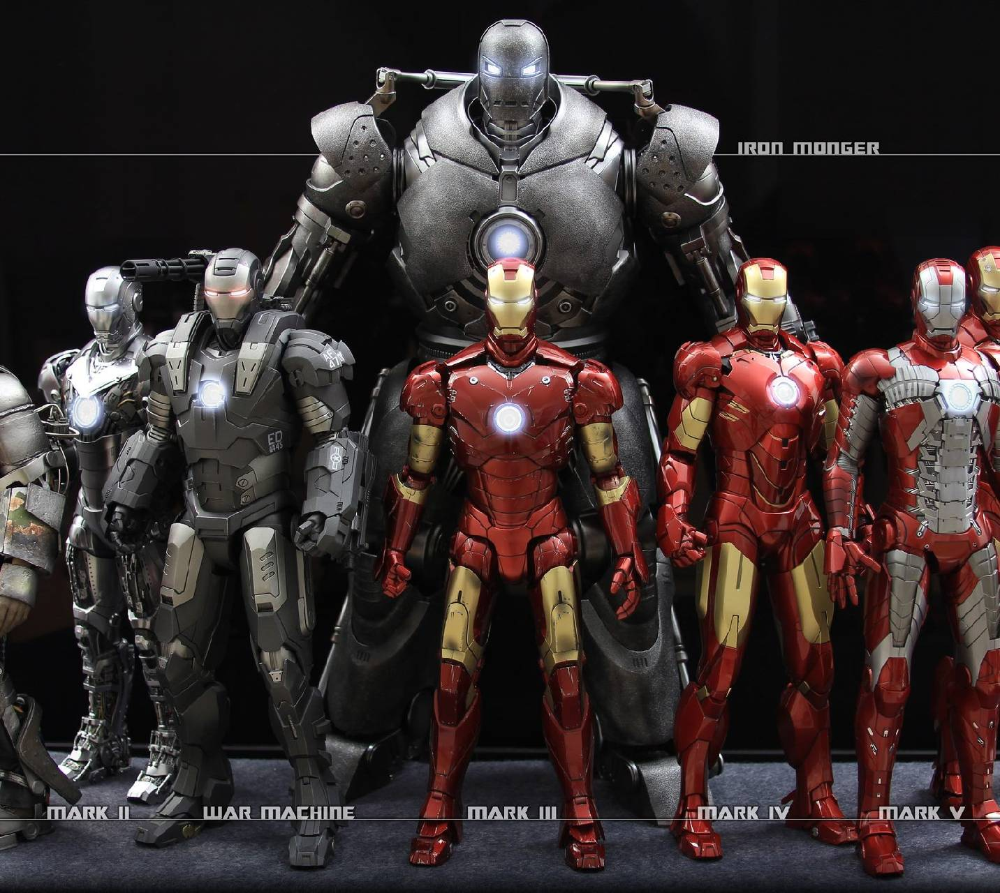

Iron man is not a man born with super power he have used his intelligence in a correct way when the time came he stood up fought for his motto and achieved it but never stopped exploring new things and never stopped upgrading himself with the time.
The same thing that i tried inheriting from that character was Patience and resilliance
;